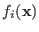

Next: PSO Up: Applications and Tools Previous: XML description Contents
These are available from the optimizers2-sharp library. When using
optirunner, you can list the available optimization algorithms and
their settings using the --list command line option. There are a few
settings common to all optimization algorithms (although some might not apply
to all algorithms). Table 3.3 lists these settings.
| Name | Description |
|---|---|
| population-size | The population size (applies to population based methods and has a special meaning for the SPSA and Systematic algorithms). |
| max-iterations | The maximum number of iterations to run the optimization (does not apply to Systematic). |
| convergence-threshold | If specified, adds an
additional stopping criterion
which is based on measurement
of convergence. If the
convergence is below the
threshold, the optimization
will be stopped. Convergence
is measured by:
Where is the set of the last
convergence-window iterations and

is the best fitness in iteration |
| convergence-window | The window (iterations) over which to measure convergence. |
| min-iterations | The minimum number of iterations to run before the convergence stopping criterion is used. |
Each of the available algorithms and their settings will be briefly described.